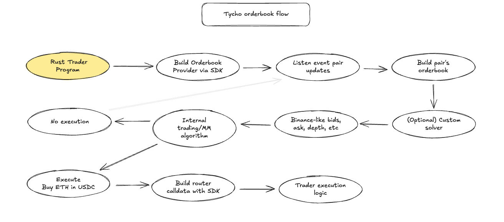
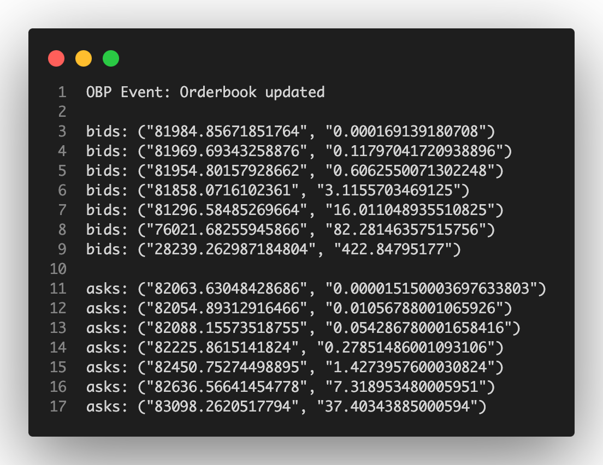

Introduction
The tycho-orderbook crate transpose onchain liquidity into a familiar orderbook format.
Why
In DeFi, liquidity is typically provided by AMMs, which use continuous formulas to distribute liquidity, unlike orderbooks that aggregate discrete limit orders. Despite their differences, both approaches ultimately produce strictly increasing supply curves.
The key insight is that if on-chain liquidity can be seen as a strictly increasing supply curve, it’s possible to replicate that curve with a series of limit orders.
By running numerous simulations, one can derive the incremental supply—essentially, the price levels at which liquidity is available—and then reconstruct an equivalent orderbook.
Since no single liquidity pool fully represents all on-chain liquidity, a router can be used to gather the best price at any depth across various pools, ultimately building an aggregate on-chain liquidity book.
This reconstructed DeFi Orderbook allows traders to:
- Visualize the shape of on-chain liquidity.
- Make informed trade decisions based on precise price levels.
- Query the expected price for a given trade size or the available depth at a specific price.
Tycho can simulate trades across any liquidity pool in microseconds, updating only the parts of the orderbook corresponding to pools that changed in the latest block.
Moreover, it converts any market order on this synthetic orderbook into on-chain call data, enabling execution directly on the blockchain.
An important caveat is that gas costs can cause the supply curve to deviate slightly from being strictly increasing. Unlike traditional orderbooks where costs scale proportionally.
Gas fees introduce discrete jumps—especially noticeable at very small trade amounts or when new liquidity pools (or ticks) are added.
Initially, these costs can worsen the price before improving it as the trade size increases, adding a layer of complexity to the simulated orderbook.
There are many reasons for building such a tool:
-
Bring more traders on-chain: In the familiar format of an orderbook, on-chain liquidity will be easier to read and execute over for a wider set of traders. This can bring new traders, e.g. those with existing strategies for orderbook markets, to use on-chain liquidity.
-
Strengthen on-chain liquidity: Making on-chain liquidity more accessible can increase on-chain volumes, and consequently revenues, and incentivise deeper on-chain liquidity, and the resulting deeper books further incentivises more on-chain trading through better prices.
-
Aggregate liquidity: Another high barrier for traders to trade efficiently against on-chain liquidity is to use the liquidity fragmented over different pools and protocols. A unified orderbook also abstracts the different protocols and pools – and presents them in a unified form.
-
Save time: Unless you have a specifically optimised setup – its hard to do all the simulations required for running sophisticated trading strategies (e.g. determining the supply for 1000 different tokens at 10 different trading volumes). A unified orderbook includes pre-simulated trade amounts that traders can use directly, or as a starting point for "final mile" simulations.
How
Under the hood, tycho-orderbook uses Tycho.
Tycho-orderbook works as follows:
- Open a stream on Tycho
- Receive notification of state update
- Calculate the orderbook for a specific pair with all relevant liquidity pools
- With a default solver, quote different trades (e.g. 1 ETH, 10 ETH, 100 ETH, then, 2K USDC, 20K USDC, 200K USDC)
- Take into account gas costs
- Produce the onchain price for a given swap
- Aggregate the output in bids|asks
- Loop on 2) to constantly monitor status updates.

For example, a Binance-formatted version of an order book would contain the following data on pair BTC-USDC.

Resources
- On-chain liquidity as an orderbook
- On-chain liquidity for a token pair presented in familiar orderbook format
Usage
This section explains how to integrate and use the Tycho-Orderbook crate in your project.
1. Adding the Dependency
To use the tycho-orderbook crate, add it to your Cargo.toml:
[dependencies]
tycho-orderbook = "0.1.0"Quickstart
Terminal
Clone the tycho-orderbook repository, where you'll find the quickstart code. The .env.ex file provides the default environment variables needed to launch the quickstart program.
ToDo
Frontend Setup Instructions
A NextJS frontend is also available, with an API using the tycho-orderbook source code. To launch it, you need docker compose.
ToDo
Local Setup Instructions
If activated, the logs provided a genered information of what's happening under the hood.
The script ops/local.api.start.sh can be used to launch the API.
The script ops/api.test.sh can be used to test the API without using the frontend.
Frontend
The public version of tycho-orderbook is limited in its ability to handle all orderbook requests and update them dynamically. To solve this problem, and to allow more flexibility, we provide an open-source Next JS frontend. You can find it in this repository: https://github.com/0xMerso/tycho-orderbook-web
This project provides a website that lets you run your own order book simulations and use your own solver to customize the order book construction algorithm.
The entire system is designed to be modular and can be launched effortlessly using docker compose.
Features
- Simulations: Run infinite simulations with a local stream.
- Solvers: Integrate your own solver module to build orderbooks.
- Deployment: Launch the entire setup with docker.
Prerequisites
- Docker Compose: Ensure both are installed on your machine.
- Rust: Required for building and modifying the code (optional).
- Solver Custom Solver Implementation: your solver module (optional).
Docker Setup Instructions
-
Clone the Repository
git clone <repository-url> cd <repository-directory>